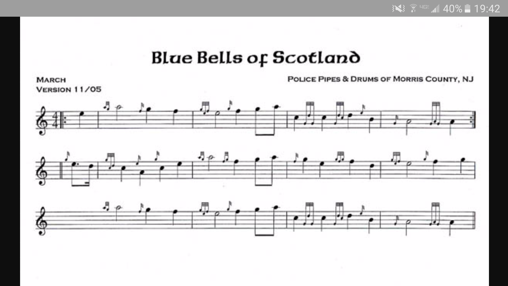

This month’s Tune of the Month features the first in a set tunes many of you are familiar with. No awa’ (a.k.a. Johnnie Scobbie) and Bonnie Charlie were both street sets some time ago. The third, Blue Bells, is a traditional march that a number of us played with the massed band the past few Tartan Day parades.

Blue Bells of Scotland courtesy Morris County (NJ) Police P&DBagpipes Bluebells of Scotland played by Duncan Pittock
Playing Notes
The tune is a straightforward 4/4 march with an AABA structure. Pay special attention to the third full measure on the second line written. This phrase features 4 quarter notes in a descending skip, and must be played cleanly.